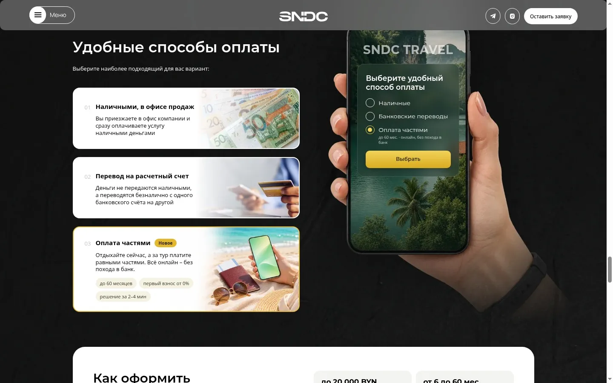
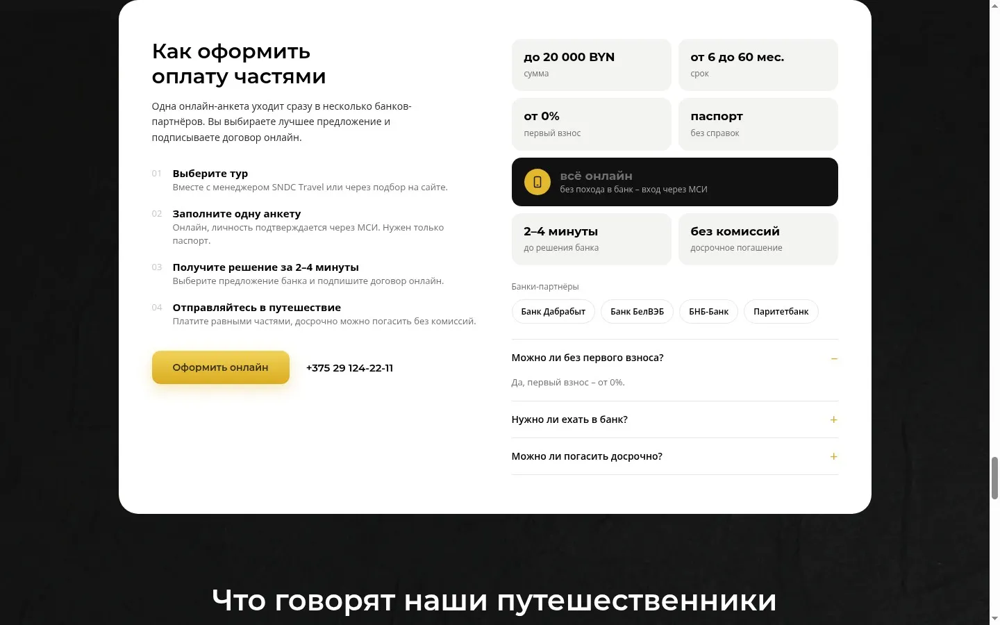
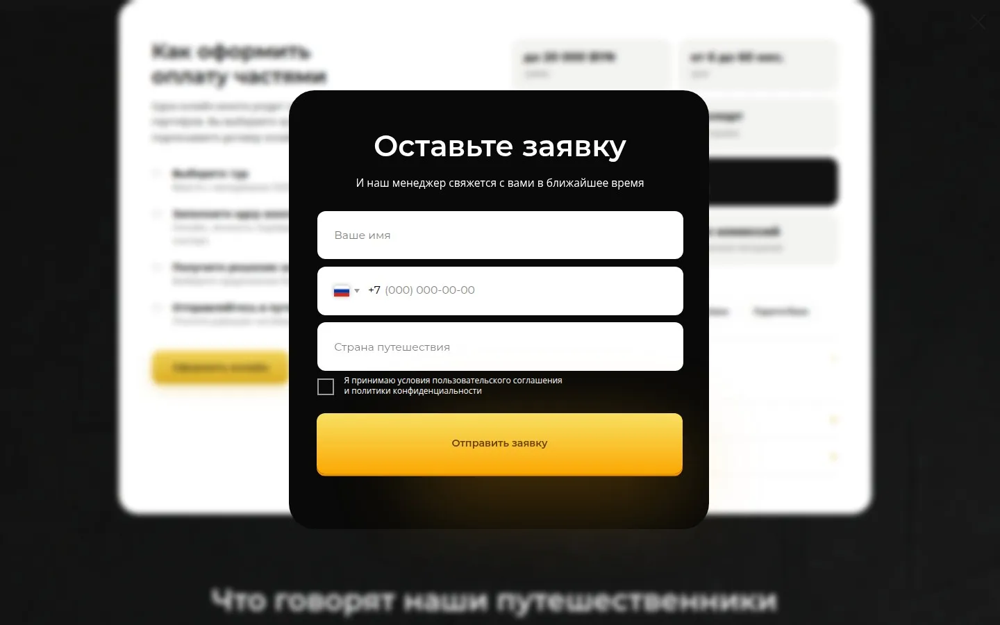
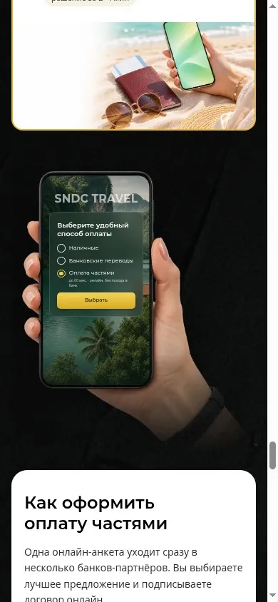
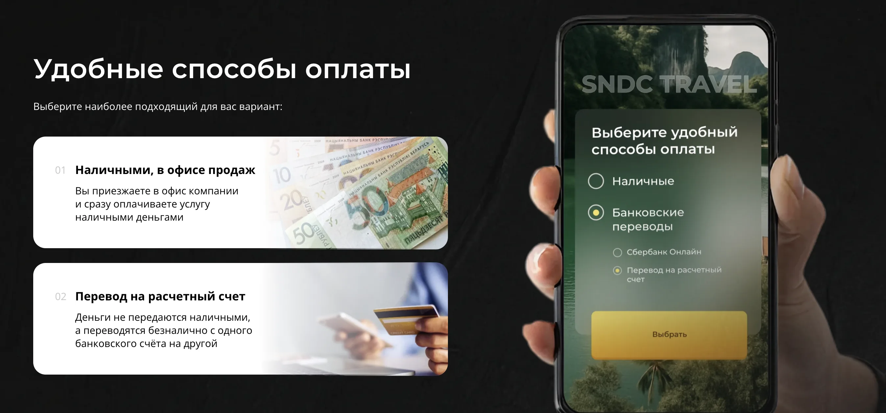
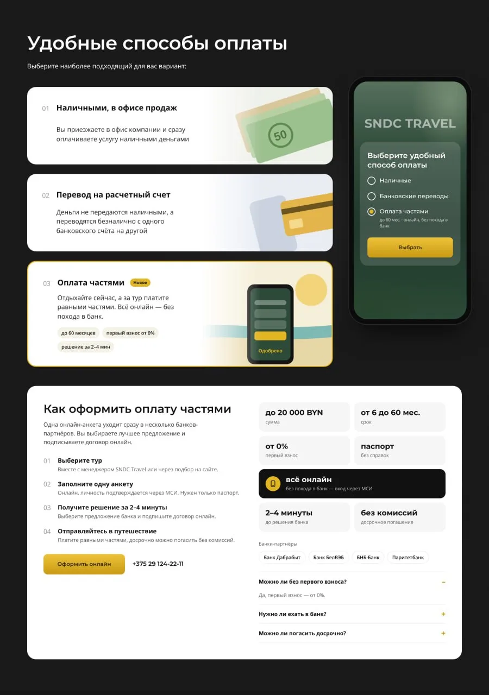
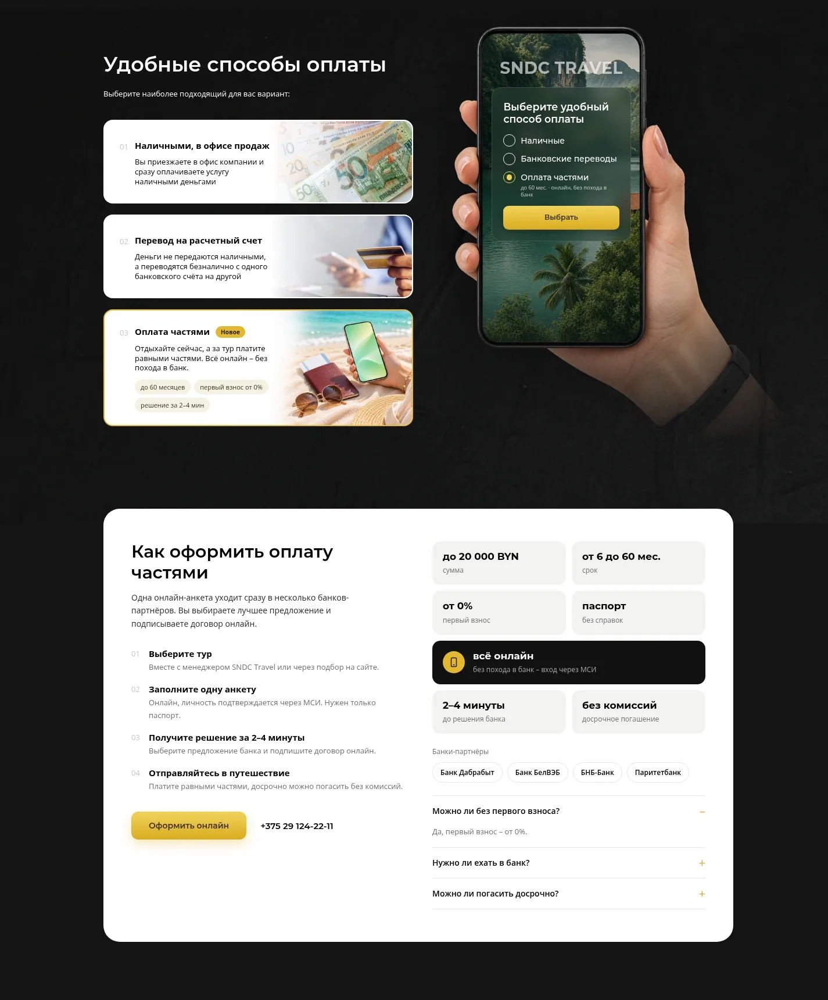
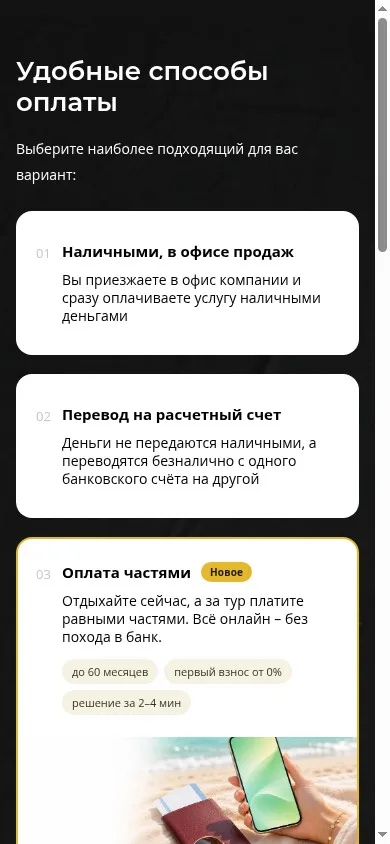

SNDC Travel: новый блок оплаты стоит на сайте, все кнопки открывают окно заявки
Живой сайт: sndc-travel.by/#Payment – раздел «Способы оплаты», 19.11.
1. Блок на сайте
- Старый Zero-блок оплаты скрыт, не удалён – вернуть можно одним кликом в редакторе Тильды. Его копия лежит в проекте.
- На его месте – новый блок Тильды (Vibe-блок) с тем же дизайном, что ты видел: три карточки, рука с телефоном, белый блок «Как оформить оплату частями».
- Шрифты – сайта (Montserrat и Open Sans), картинки – на CDN Тильды, фон – общий фон страницы.
- Пункт меню «Способы оплаты» ведёт сюда же: якорь не трогали.


2. Кнопки – в окно заявки
- «Выбрать» на экране телефона и «Оформить онлайн» открывают уже существующее на сайте окно «Оставьте заявку» – то же, что у кнопки «Оставить заявку» в шапке.
- Отдельное окно не делал: готовое уже настроено, заявки из него уходят в Tilda CRM «Заявки travel», два Telegram и почту sndc.clients.
- Телефон в блоке – звонок по номеру +375 29 124-22-11.

3. Больше ничего не трогал
Изменены только два блока главной: старый скрыт, новый добавлен сразу за ним. Остальные страницы и блоки – без изменений. Главная опубликована два раза (вторая – правка цвета одной плитки).
Что проверено
- Живой сайт в браузере на 1440 и 390 px: старого блока нет, новый на месте, горизонтальной прокрутки нет, карточки на телефоне с полями 16 px, все 4 картинки загружены, шрифты сайта.
- Клик по «Оформить онлайн» (1440 px) и по «Выбрать» (390 px) – окно заявки открывается.
- Код блока в Тильде перед правкой сверен с моим – совпадает.

Нужно от тебя
- Глянуть сайт и сказать, если что поправить.
- Цифры (до 20 000 BYN, 6–60 мес., банки) – из прототипа, подтвердить у клиента.
- Заметил, не трогал: в окне заявки телефон по умолчанию с флагом России и +7, а сайт белорусский. Поправить на +375 – скажи.
Что раскрыть
- Как откатить: в Тильде включить старый блок оплаты, скрыть новый, опубликовать.
- Отдельное окно заявки «на рассрочку» с пометкой способа оплаты – если менеджерам нужно видеть, откуда заявка.
Как делали дизайн блока (19.11, до выкладки)
Макет блока: открыть отдельно – версия до выкладки, на ней Артём смотрел дизайн.
Что было на сайте – не тронуто
Заголовок, подзаголовок, карточки «Наличными» и «Перевод на расчётный счёт» – те же тексты, шрифты (Montserrat + Open Sans), размеры 533×144, радиус 16, серые номера, оригинальные фото с Тильды и фактура фона страницы.

Что добавлено по прототипу
- Карточка 03 «Оплата частями» – жёлтая рамка, плашка «Новое», три метки: до 60 месяцев, первый взнос от 0%, решение за 2–4 мин. Фото к ней новое, в той же манере, что у 01 и 02: светлый край слева, пляж, паспорт, телефон.
- Блок «Как оформить оплату частями» – белая панель: 4 шага, кнопка «Оформить онлайн», телефон +375 29 124-22-11, плитки условий (до 20 000 BYN, 6–60 мес., от 0%, паспорт, всё онлайн через МСИ, 2–4 минуты, без комиссий), банки-партнёры и 3 вопроса раскрывашкой.

Картинка с телефоном – новая
Старая: мыльная, на экране «Сбербанк Онлайн» – для Беларуси мимо. Новая рука с телефоном сгенерирована через GPT в Codex – бесплатно, по подписке. Интерфейс на экране не нарисован, а свёрстан кодом поверх фото: текст чёткий, варианты «Наличные / Банковские переводы / Оплата частями» нажимаются. На сайте кнопка «Выбрать» открывает окно заявки.


Что проверено тогда
- Открыто на Pages через браузер на 1440 и 390 px: горизонтальной прокрутки нет, поля 16 px, все 4 картинки грузятся.
- Клик по варианту на экране меняет выбранную карточку и ссылку кнопки – проверено скриптом.
-
Картинки в WebP: рука 172 КБ, фото карточки 48 КБ.
-
Исходники: ~/Sites/sndc-oplata (оригиналы с сайта, сгенерированные PNG, блок).